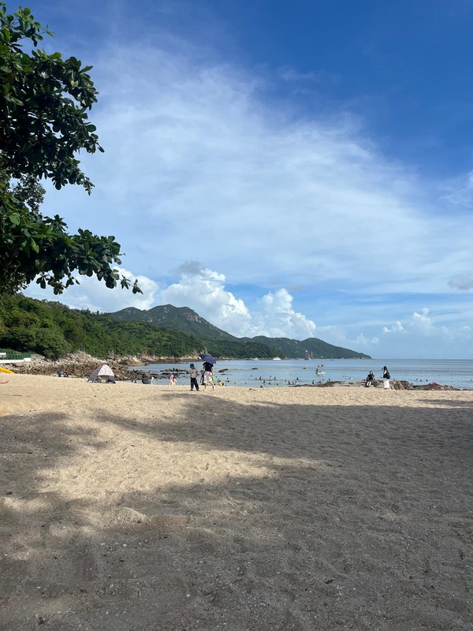

Hong Kong Has Beaches. Really Good Ones.
Nobody believes this until they go. Hong Kong has more than 40 public beaches, and on a weekday some are almost empty.
Four beaches to start with
- Shek O. The easiest win. Take Bus 9 from Shau Kei Wan MTR station, about 30–40 minutes. There's a small village behind the beach with cheap Thai and noodle places.
- Big Wave Bay. One stop further than Shek O. Smaller, better for surfing, with board rental at the beach.
- Repulse Bay. The famous one. Wide, clean and packed on weekends. Easy by bus from Central.
- Clear Water Bay. In the east, near HKUST. Quieter, with clear water as the name says.

Before you go
Public beaches have free entry, changing rooms, showers and lifeguards in the swimming season (roughly April to October). Bring cash for minibuses, as a few don't take Octopus. Check the Hong Kong Observatory before you go: typhoon signals and red flags close beaches. For getting there, see our guide to buses and minibuses.